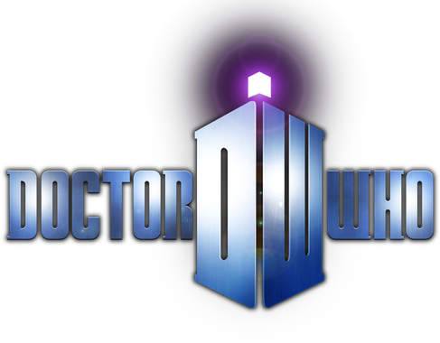

Doctor Who Universe
Crée par un fan pour les fans !
Crée par un fan pour les fans !
Le Maître est, comme le Docteur, un Seigneur du Temps, mais il a choisi de faire le mal. Ennemi récurrent du Docteur, il tente de prendre possession de la Terre à de nombreuses reprises.
Il fut créé par le producteur Barry Letts et les scénaristes Terrance Dicks et Robert Holmes afin d'être un antagoniste comparable à ce que le Professeur Moriarty est à Sherlock Holmes, c'est-à-dire un personnage aussi intelligent que lui, et son côté "opposé". Il a été conçu comme un personnage ayant du charme, étant manipulateur.
Comme le Docteur, le véritable nom du Maître est demeuré inconnu jusqu'à aujourd'hui, même s'il s'est durant un temps fait appeler Koschei (en référence à Kochtcheï, un personnage maléfique issu des contes russes) avant de se faire appeler le Maître. Les deux Seigneurs du Temps partagent néanmoins une amitié qui dure depuis l'enfance, le Maître a donc un statut particulier parmi les ennemis du Docteur. Ce dernier l'appelle d'ailleurs son « meilleur ennemi ».
Le Maître apparaît pour la première fois en 1971 dans l'épisode Terror of the Autons sous les traits de l'acteur Roger Delgado. Le Docteur et lui se connaissent et étaient déjà ennemis à l'époque où le Docteur vivait sur Gallifrey. Un Seigneur du Temps, venu prévenir le troisième Docteur, suggère même que le Maître est considéré comme étant un meilleur étudiant que le Docteur. Le Maître tente d'instaurer une invasion des Nestenes sur Terre en se servant d'Autons et de jonquilles en plastiques provoquant l'asphyxie. Au cours de l'épisode, le Maître tente par plusieurs fois de tuer le Docteur même s'il a du respect pour lui car il le considère comme le seul adversaire à sa mesure. Le Docteur et lui repoussent finalement l'invasion Nestene. À la fin de l'épisode, le Maître est obligé de rester sur Terre car le Docteur a saboté son TARDIS, mais en récupérera l'usage lors de l'épisode suivant, The Mind of Evil.
Le Maître est doté d'un pouvoir de persuasion et d'hypnotisme mais quelqu'un doté d'une forte volonté peut lui résister. C'est un professionnel dans l'art du déguisement. Il tue régulièrement ses ennemis en les rapetissant afin de les étouffer.
Le Maître réapparaît 3 ans plus tard en 1976 dans l'épisode The Deadly Assassin. C'est alors une sorte de squelette décati aux yeux exorbités et l'on ne peut savoir s'il s'agit de la même incarnation totalement défigurée ou d'une nouvelle régénération. Son personnage est une marionnette dont la voix est celle de Peter Pratt. Au bout de ses régénérations, il est impliqué dans une machination visant à tuer le président des Seigneurs du Temps et cherche à récupérer la clé de Rasillon permettant d'ouvrir l'Œil de l'Harmonie, source originelle de puissance des Seigneurs du Temps. Ce faisant cela lui offrirait de nouvelles régénérations au prix de la destruction de Gallifrey. Il finit par être poussé dans un trou par le quatrième Docteur. Alors que les autres Seigneurs du Temps le croient mort, on le voit s'enfuir à bord de son TARDIS.
5 ans plus tard, en 1981, ayant décidé de faire revenir un ancien ennemi afin de faciliter la transition entre le 4e et le 5e Docteur, le producteur John Nathan-Turner et le script-editor (responsable des scénarios) Christopher H. Bidmead mettent en place une trilogie basée sur le retour du Maître. Dans The Keeper of Traken, le Maître réapparaît après s'être fait passer pour Melkur, une entité cachée dans une statue. Le but du Maître était de prendre possession de la Source, un artefact lui permettant de devenir le Gardien de Traken, un être puissant. Son corps est toujours décharné, même si cette fois-ci, il est joué par Geoffrey Beevers au lieu d'être joué par une marionnette. À la fin de l'épisode, il échoue à gouverner la Source, mais réussit à prendre le corps de Tremas, un consul qui avait aidé le Docteur et joué par Anthony Ainley.
Dans l'épisode suivant, Logopolis le Maître piège le TARDIS du Docteur alors que celui-ci se rend à Logopolis, la ville des savants mathématiciens. Espérant trouver un immense pouvoir dans cette ville, il entame sa destruction ce qui provoque par ricochet, la destruction de l'univers. Le Docteur et le Maître parviennent à empêcher la catastrophe en utilisant les radiotéléscopes d'un projet scientifique Terrien. Alors que le Maître cherche à s'en emparer afin de faire du chantage à tout l'univers, le Docteur réussit à l'en empêcher mais chute de la structure, ce qui entraîne sa mort et sa régénération.
Il est l'antagoniste principal du téléfilm de 1996, Le Seigneur du Temps. En préambule, il est expliqué que l'incarnation précédente a été capturée puis exécutée par les Daleks, qui lui ont toutefois accordé une dernière volonté : que le Docteur ramène ses cendres sur Gallifrey. C'était en réalité un piège : revenant sous la forme d'une sorte de serpent visqueux, il provoque l’atterrissage d'urgence du TARDIS du Docteur à San Francisco la veille de l'an 2000 et prend ensuite le contrôle du corps d'un ambulancier, joué par Eric Roberts. Son but est dès lors de capturer le Docteur et de se servir de la source d'énergie de son TARDIS, l’Œil de l'Harmonie, afin de lui voler ses régénérations. Pour cela, il use encore une fois de ses capacités pour manipuler les compagnons du Docteur, mais celui-ci, après un combat final, jette le Maître à l'intérieur de l'Œil, marquant ainsi la fin apparente du Seigneur du Temps maléfique.
Dans Utopia (2007), le Docteur rencontre le Professeur Yana (joué par Derek Jacobi) qui travaille sur le projet "Utopia" avec une assistante, nommée Chan To. Martha Jones discute avec lui et découvre qu'il possède la même montre à gousset que le Docteur (celle gravée de motifs gallifreyens et dont il s'était servi pour devenir temporairement humain).
A force de regarder la montre, ce dernier se rappelle de son identité : il est le Maître, qui a fui la Guerre du Temps aussi loin que possible (en l'an 100 milliards) et qui s'est transformé en humain pour se protéger des Daleks et des Seigneurs du Temps. Lorsqu'il se souvient enfin de son passé et redevient un Seigneur du Temps, il décide de piéger le Docteur en permettant aux cannibales d'arriver jusqu'à eux. Chan To décide de l'arrêter en lui tirant dessus dans son dernier souffle, le forçant à se régénérer.
Il décide de fuir dans le TARDIS du Docteur, qu'il verrouille, l'empêchant ainsi d'entrer. Il se régénère alors et c'est John Simm qui reprend le rôle. Il demande au Docteur de l'appeler par son nom, ce à quoi le Docteur répond, "Maître", ayant compris son identité. Il s'en va avec le TARDIS du Docteur, le laissant lui, Martha Jones et Jack Harkness à la fin du monde, sous l'attaque de cannibales.
Une fois revenu sur Terre (à Londres) dans l'épisode suivant, Que Tapent les Tambours, le nouveau Maître, joué par John Simm, se fait élire Premier Ministre britannique sous le nom de Harold Saxon grâce à un champ télépathique mondial. Il fait ensuite régner une dictature de fer sur la Terre aux côtés de sa nouvelle femme Lucy, aidé par les Toclaphanes, qu'il présente comme une race extraterrestre. Les Toclaphanes sont en réalité les derniers humains de l'univers (avec qui le Maître vivait avant de retrouver sa mémoire et de revenir sur Terre), qui, dans un dernier espoir de survie, se sont « robotisés » et ressemblent maintenant à des sphères de métal en lévitation contenant uniquement la tête de leur propriétaire. Il utilise ces créatures pour exécuter le Président des États-Unis à la télévision. En ayant suivi le Maître, le Docteur, Martha et Jack retrouvent le TARDIS, que le Maître a "cannibalisé" et transformé en machine à paradoxes.
Il réussit à capturer le Docteur, et, en utilisant son tournevis laser, il le fait physiquement vieillir d'abord de 100 ans. Il ordonne ensuite aux Toclaphanes d'éliminer un dixième de la population humaine.
Pour la première fois depuis le début de la série, le Maître est interprété par une femme, (l'actrice Michelle Gomez). De ce fait, elle préfère maintenant se faire appeler Missy (diminutif de Mistress en anglais). Fidèle à elle-même , elle se montre diabolique et sans cœur, n'hésitant pas à tuer de sang froid (voir par exemple la façon dont elle tue le Dr Cheng dans La Nécrosphère, 2014). Elle se montre particulièrement inconséquente et détachée du reste du monde en tuant la très populaire Osgood dans Mort au Paradis (2014) ou en incitant le Docteur à tirer sur Clara dans La Sorcière et son Pantin (2015).
Cependant, contrairement à ses prédécesseurs, elle ne recherche ni domination des masses ni de destruction particulière. C'est en réalité son amitié avec le Docteur qui dicte chacune de ses actions. Ainsi, elle cherche à lui fournir une armée de Cybermen (Mort au Paradis) ou encore l'aide à s'échapper de Skaro (La Sorcière et son Pantin). Dans sa quête désespérée de retrouver son ancien ami, elle accepte même de se repentir de ses crimes passés. Missy développe ainsi de l'empathie pour ses anciennes victimes et pour le monde qui l'entoure (on la voit notamment pleurer à ce sujet à la fin de The Lie of the Land, 2017). Son changement de position atteint son paroxysme lorsqu'elle choisit de se suicider, en tuant sa précédente incarnation pour rejoindre le Docteur (The Doctor Falls, 2017). Mais c'est finalement ce choix qui lui sera fatal. Missy est, à ce jour, le seul Maître à avoir démontré un sincère désir de faire le bien et de se tenir aux côtés du Docteur.
De manière générale, Missy est une femme pleine d'humour noir et de répartie. Elle sait se montrer charmante et s'amuse à flirter avec le Docteur ou avec son ancienne incarnation. Elle aime également insister sur sa féminité en se maquillant dans les moments les plus improbables ou en insistant sur son titre de "Dame du temps", et non "Seigneur du Temps".